Daftar Istilah
Daftar istilah yang digunakan oleh fiakodev dalam pengembangan LAMBDA.
Istilah ini digunakan untuk memudahkan penyampaian dan konsistensi dalam pengembangan LAMBDA. Istilah ini digunakan di FIAKO Engineering.
NUMERIC
Angka / numerik. Numerik yang dimaksud adalah bilangan real: \(\mathbb{R} = \{-1, 0, 1, \pi, 2.3212, -1.2, \frac{2}{3}, \dots\}\). Bilangan complex \(\mathbb{C}\) tidak termasuk.
LOGICAL
TRUE atau FALSE. Dapat dikenal juga sebagai boolean. Nilai logical bisa juga direpresentasikan dalam bentuk numerik dengan 0 berarti FALSE, sedangkan nilai numerik selain 0 dianggap TRUE.
TEXT
Karakter atau teks. Dikenal juga sebagai string.
CELL
Sel.
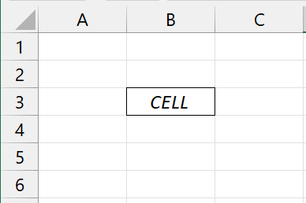
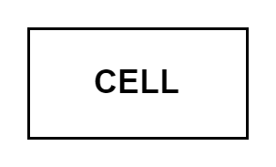
RANGE
Rentang yang terdiri dari lebih dari satu sel.
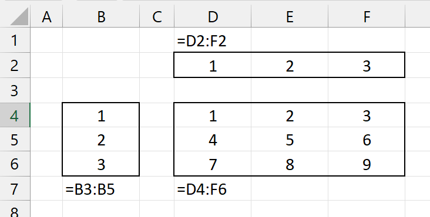
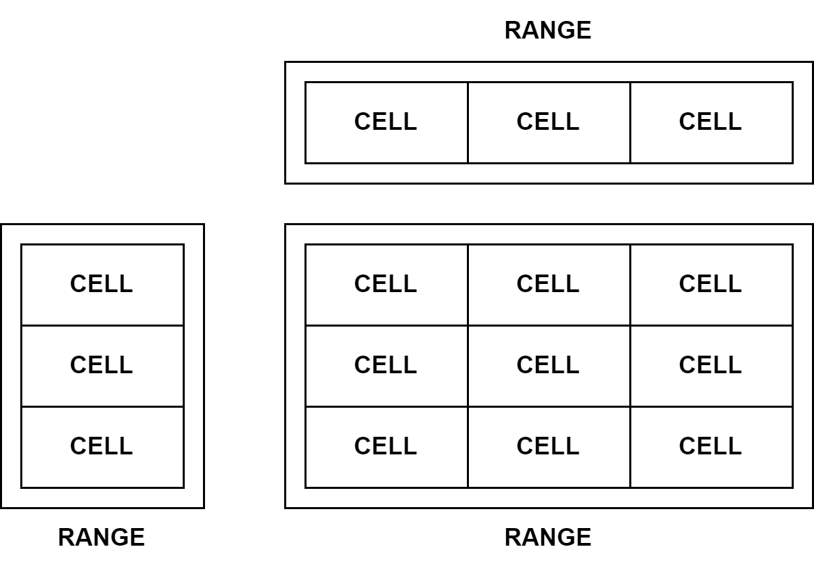
VECTOR
Range yang memiliki 1 dimensi.

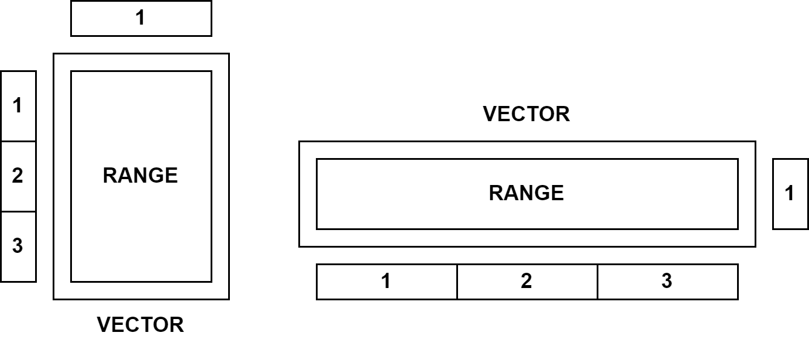
ARRAY
Range yang memiliki 1 dimensi atau 2 dimensi. Untuk membedakan antara 1 dimensi dan 2 dimensi, istilah array digunakan untuk range yang memiliki 2 dimensi. Meskipun array di excel bisa merepresentasikan range 1 dimensi atau range 2 dimensi.
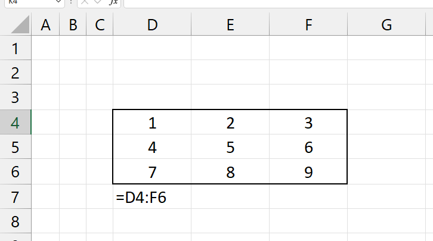
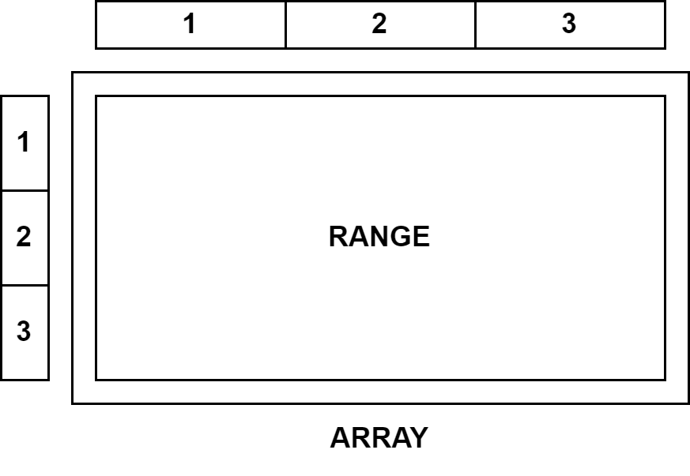
TABLE
Array yang memiliki header dalam format tabel.
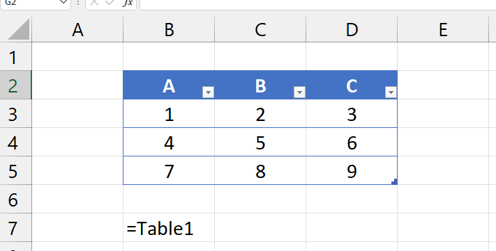
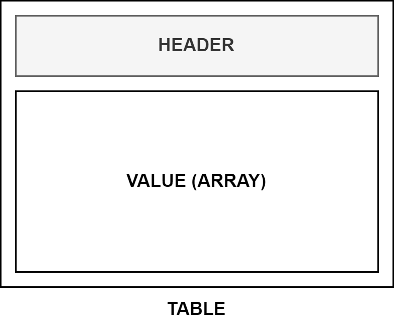
LOGICAL VECTOR / LOGICAL ARRAY
Vector atau array yang berisikan nilai TRUE atau FALSE.
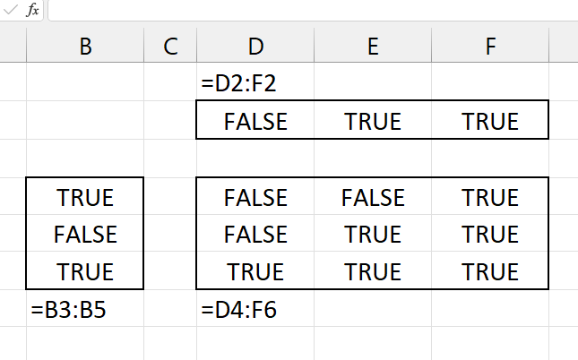
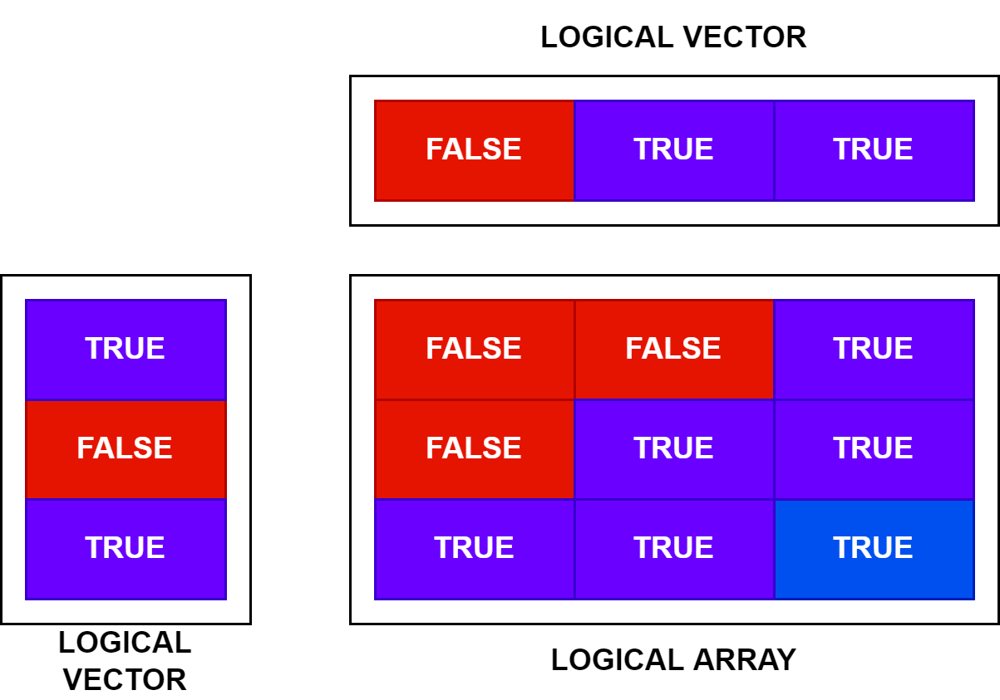
NUMERIC VECTOR / NUMERIC ARRAY
Vector atau array yang berisikan nilai numerik.
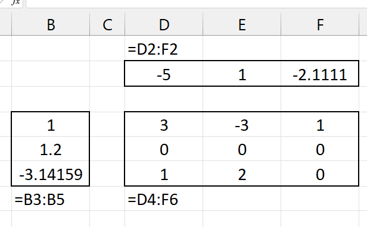
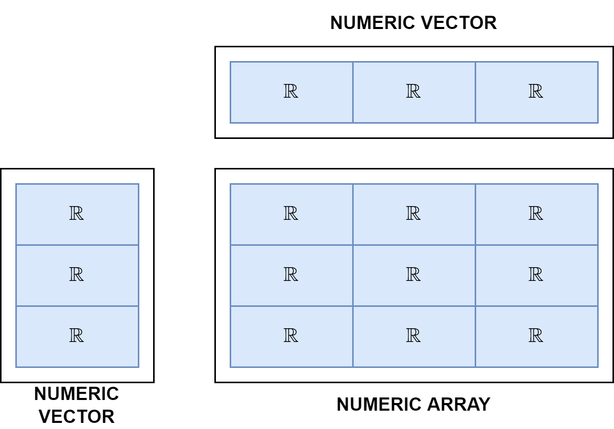
TEXT VECTOR / TEXT ARRAY
Vector atau array yang berisikan nilai text atau string.
ROW VECTOR
Vector yang melebar ke samping atau berupa baris.
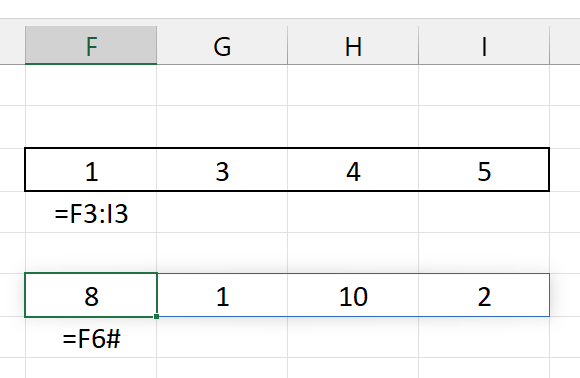
COLUMN VECTOR
Vector yang memanjang ke bawah atau berupa kolom.
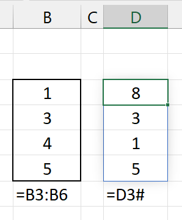
DYNAMIC ARRAY
Larik dinamis adalah kumpulan nilai / sel yang merupakan satu kesatuan. Dapat berupa vector (1D) atau array (2D).
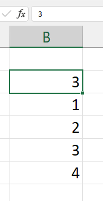
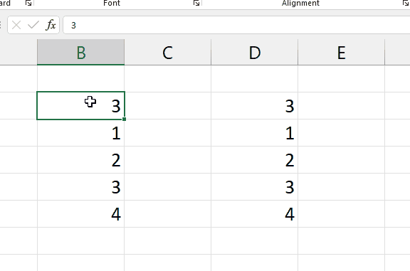
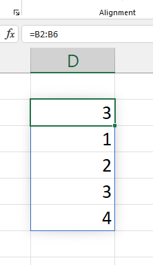
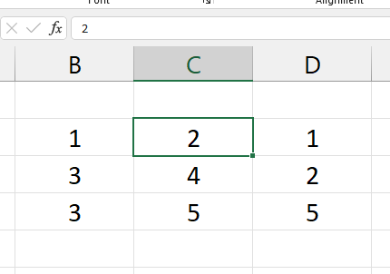
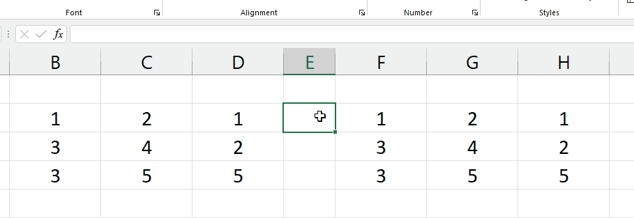
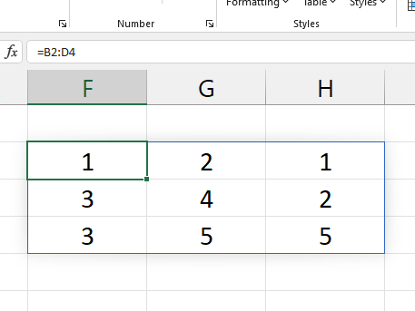
DYNAMIC ARRAY FORMULA / FUNCTION
Formula atau fungsi yang mengeluarkan hasil lebih dari satu sel (vector / array) dalam bentuk dynamic array.
Persamaan yang termasuk dynamic array formula antara lain: =POWER(), =ABS(), =ROUNDUP(), dll. Yang perlu diingat bahwa formula dynamic array mampu menghasilkan nilai dalam bentuk vector atau array sesuai jenis nilai yang dimasukkan.
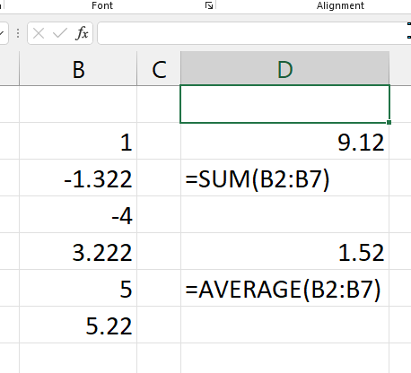
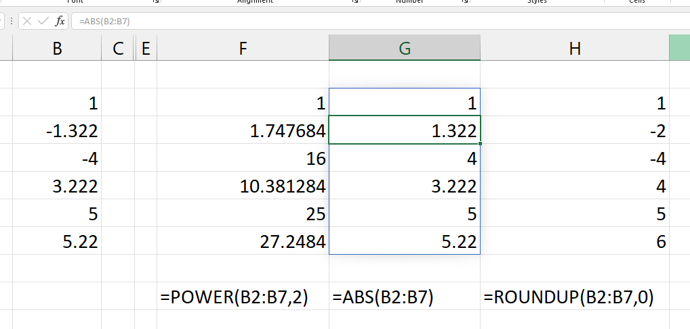
SCALAR FORMULA / FUNCTION
Formula atau fungsi yang mengluarkan hasil satu sel atau scalar (satu nilai).